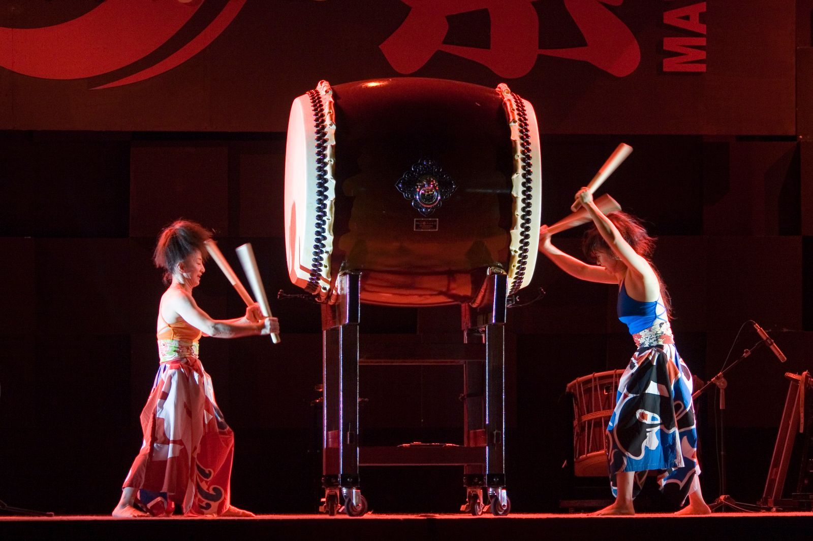

Taiko ensemble · Tokyo · Booking festivals, schools & stages for 2027
One drum, carried by many hands.
Ensemble Hayate is six players, eleven drums and one 46-minute set, led by taiko player Kenji Mori. This page is printed like the programme we hand out at the stage door: the set list with its timings, the drums with their weights, the patterns you can play yourself, and the fees — in print, from ¥45,000. No mystery, no "price on application".

The pattern board
Taiko is taught by voice before it is taught by hand. Read the phrase, then press Play.
About the sound: these are synthesised demonstrations of the patterns, generated in your browser when you press Play — a low membrane voice for DON, a rim click for KA. They teach the shape of the rhythm. They are not recordings of the ensemble, and no synthesis is a substitute for an 80 kg drum in a real space.
The full set, as printed
Six pieces, timed with a stopwatch at rehearsal — the same sheet the stage manager gets.
Table — the 46-minute festival set · scrolls sideways on small screens
| Piece | Drums | Formation | Minutes |
|---|---|---|---|
| 1 · Hiraki — the Opening | Nagado-daiko × 4, shime | Full line of six | 6 |
| 2 · Matsuri Ji | Nagado × 4, shime, chappa | Two rows, facing | 9 |
| 3 · Umi Kata — the Sea Form | Okedo-daiko × 3, nagado | Carried on straps, moving | 11 |
| 4 · Shime Conversation | Shime-daiko × 2 | Pair, centre stage | 5 |
| 5 · Miyake — the Low Stance | Nagado-daiko × 4 | Low stance line | 8 |
| 6 · Odaiko — the Thunder Solo | Odaiko, shime | Soloist + timekeeper | 7 |
| Full set, including the pauses the stage manager is told to expect | 46 min | ||
Short on time? The half set (25 minutes) is pieces 1, 2, 4 and a shortened Odaiko — four players, no carried drums, one van trip. Tight stages, school halls and winter slots usually take the half set; the full set wants a stage at least 8 × 5 metres (the measurements are on the drums page).
Fees, in print
Every engagement is quoted from this sheet. If your quote differs, it differs for one of the reasons listed under it.
What moves the price
- The odaiko travels. It needs the long van and two carriers. Inside Tokyo that is in the fee; beyond the city it is charged at cost.
- Travel outside Tokyo — rail at cost, plus ¥15,000 per player per day away.
- Rain cover for outdoor sets. Drum skins and rain do not mix; if the forecast turns, a marquee over the stage is hired at cost — see the riverside case on the performances page.
- Extra players — a seventh or eighth player for very large stages, ¥25,000 each.
- Collaboration rehearsals — joint work with dancers or other musicians is rehearsed, not improvised; extra rehearsal days are quoted per day.
"The rain plan was in the first email — which drums move, which piece shortens, who decides, and by when. On the day, the weather did exactly what the forecast said, and the set still landed. That is why they are already booked for next year."
Programme Director, Riverside Spring Matsuri — on the performance in Case 01
Season 2027
Festival season (July–August) books out four months ahead. One August date is still held, not confirmed.